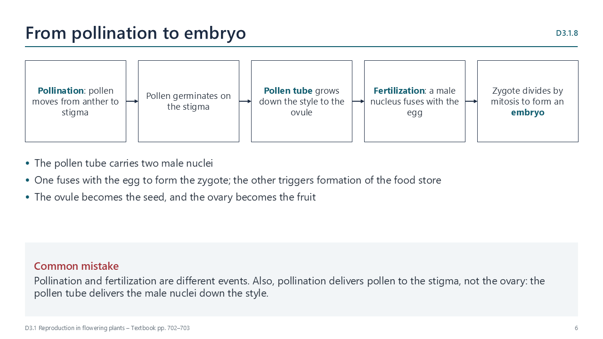

How flowering plants reproduce sexually
pp. 702–703Male gametes develop inside pollen grains, and the egg develops inside an ovule in the ovary. Many flowers are hermaphrodite, yet reproduction is still sexual, because gametes fuse.
- Pollination: pollen moves from an anther to a stigma.
- The pollen germinates, and a pollen tube grows down the style to the ovule.
- Fertilization: a male nucleus fuses with the egg, forming a zygote. The other male nucleus triggers the formation of a food store.
- The zygote divides by mitosis to form an embryo. The ovule becomes the seed, and the ovary the fruit.

Watch out: pollination delivers pollen to the stigma, not to the ovary.